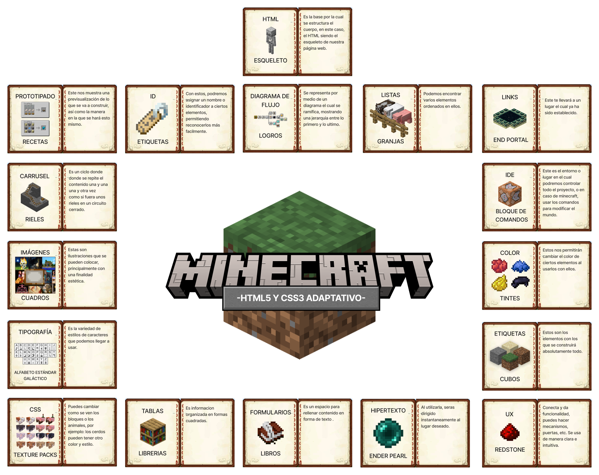
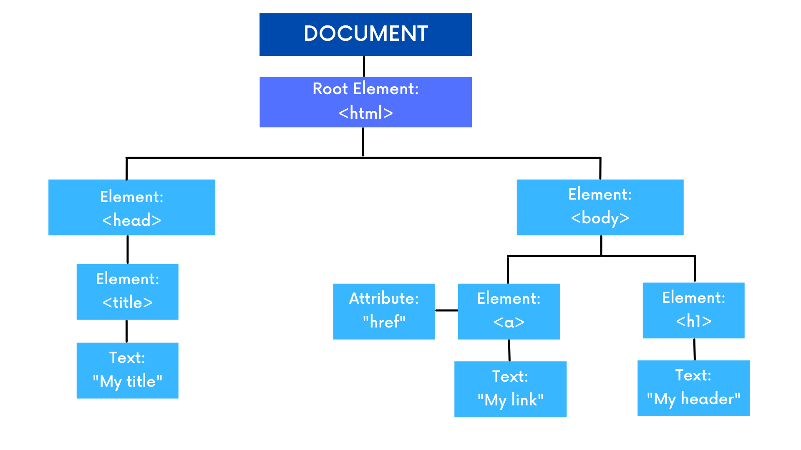
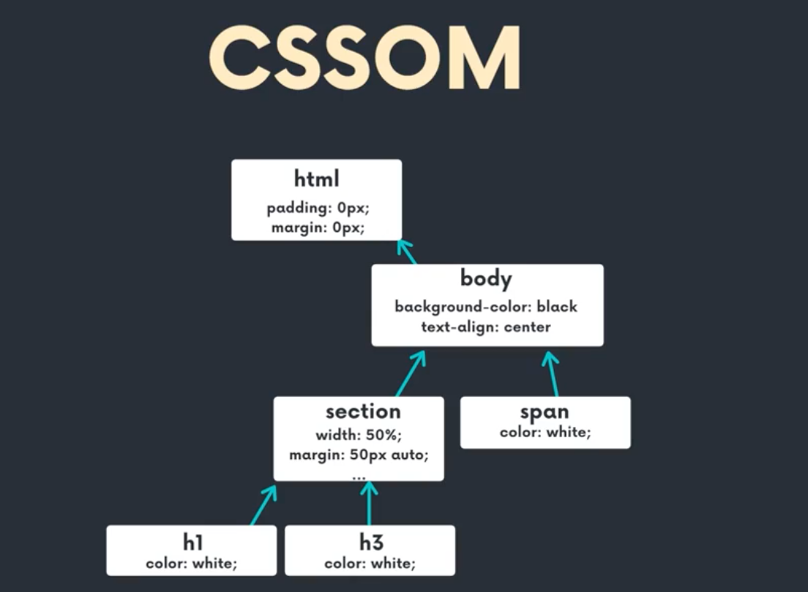
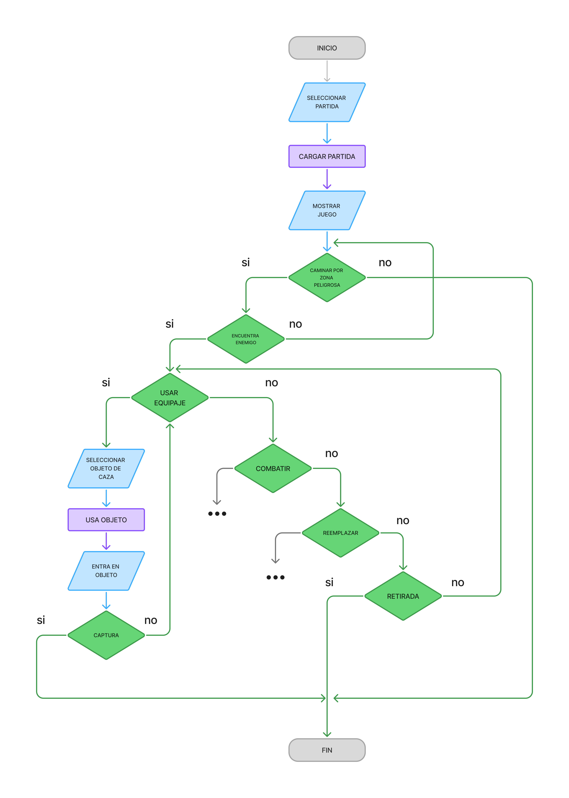

Actividad 1 - HTML5 Y CSS3
La primera actividad de la materia, fue hacer un gráfico con todos los temas que recordamos de HTML y CSS.

DOM
El DOM (Document Object Model) es el que nos permite conectar páginas web a scripts o lenguajes de programación al representar la estructura de un documento.El DOM representa un documento con un árbol lógico. Cada rama del árbol termina en un nodo y cada nodo contiene objetos. Los métodos DOM permiten el acceso programático al árbol. Con ellos, puede cambiar la estructura, el estilo o el contenido del documento.

DOM CSS o CSSOM
Cuando el DOM y el CSS se combinan. Es posible modificar los estilos de nuestro documento HTML. El CSSOM permite:
- Manipular estilos CSS: Cambiar el color, tamaño, posición, etc., de los elementos de una página web mediante código JavaScript.
- Crear efectos dinámicos: Implementar animaciones, transiciones y otros efectos visuales que responden a la interacción del usuario
- Personalizar la apariencia: Permitir a los usuarios ajustar la apariencia de la página a sus preferencias. Construir interfaces dinámicas: Crear aplicaciones web interactivas y responsivas que se adaptan a diferentes dispositivos y tamaños de pantalla.

DOM EVENTOS
Dentro de los sitios web, existen los eventos, por ejemplo, cuando hacemos hover o click dentro de un
elemento. Esto se obtiene gracias al DOM, ya que el DOM proporciona la estructura sobre la cual los
eventos pueden ser gestionados, detectados y manipulados.
Eventos: Son interacciones
entre
el
usuario y la página web (clics, teclas, desplazamiento, etc.).
DOM: Proporciona la estructura sobre la cual los eventos pueden ser gestionados.

DOM ANIMACIONES
Utilizando JavaScript es posible manipular las propiedades del DOM en cada fotograma de una animación, creando efectos visuales como desplazamiento, rotación, cambio de tamaño, entre otros. Es comunmente usado para crear un "call to action" o una pantalla de carga.
VIEWPORT
El viewport es el área visible de un dispositivo donde visualizamos el contenido de nuestro sitio web. este se define mediante la etiqueta META, este es fundamental para que los sitios se adapten a los diferentes tamaños de pantalla como un dispositivo movil. permitiendo asi que el sitio sea legible sin necesidad de hacer zoom.
LA IA IMPLEMENTADA EN CODIGO WEB
La IA implementada en códigos web facilita la mejora de varios aspectos en un sitio web para que pueda ofrecer una mejor experiencia a sus visitantes y clientes. Las herramientas de IA le resultarán muy útiles para reunir a su público de forma eficaz.
Los sitios web son cada vez más inteligentes, más rápidos de construir y más fáciles de usar gracias a las herramientas de IA. Las aportaciones de la IA al diseño web, la optimización de motores de búsqueda y el desarrollo son múltiples. Por ejemplo:
- Agilización del desarrollo: La inteligencia artificial puede automatizar procesos de codificación repetitivos, como sugerir que se complete el código, generar código repetitivo e identificar posibles errores
- Mejora de la experiencia del usuario: La IA personaliza el recorrido de los usuarios adaptando el contenido, las recomendaciones y las interfaces en función de las preferencias y el comportamiento individuales. Cada uno de sus usuarios disfruta de una experiencia más atractiva y relevante
- Optimización del rendimiento y la estrategia de contenidos: La IA puede analizar los datos de los usuarios y el rendimiento del sitio web para proporcionar información valiosa sobre el diseño del sitio web, la estrategia de contenidos y las campañas de marketing. Además, puede utilizar herramientas impulsadas por IA para crear formatos de contenido como entradas de blog y fragmentos de código
- Innovación y potencial de futuro: La IA permite ahora la función de búsqueda por voz para que los usuarios interactúen con su sitio web utilizando el lenguaje natural. Sus algoritmos pueden monitorizar su comportamiento para sugerir interfaces de usuario visualmente atractivas y fáciles de usar
UNIDADES RELATIVAS Y ESTATICAS DE CSS
En HTML existen las unidades de valor para las propiedades que se le agregan a un elemento HTML, por ejemplo, el ancho, el alto, margen, entre otros. Dichas unidades se dividen en dos, las unidades relativas y las unidades estaticas.
Un valor en CSS es una forma de definir una colección de subvalores admitidos. Esto significa que si ves color como válido, no necesitas preguntarte cuáles de los diferentes tipos de valor de color puedes usar: palabras clave, valores hexadecimales, funciones rgb(), etc. Puedes usar cualquier valor color disponible siempre que tu navegador lo admita.
Las unidades estaticas son las que definen un valor fijo e invariable, es decir que este no cambia bajo ninguna circunstancia, independientemente del contexto o dispositivo de visualización. Un ejemplo es:
- px (píxeles): La unidad más común. Un píxel de CSS se refiere a un punto en la pantalla, aunque no siempre corresponde a un punto físico en pantallas de alta densidad (retina).
Las unidades relativas son aquellas que son flexibles y su valor cambia según el valor de otra unidad de referencia, lo que las hace ideales para la adaptabilidad. las unidades relativas dependen de algún otro factor (elemento padre, tamaño de letra, interlineado, etc...). Tienen una curva de aprendizaje más compleja, pero son ideales para trabajar en dispositivos con diferentes tamaños, ya que son muy flexibles y versátiles y bien utilizadas pueden ahorrar trabajo de desarrollo. Estas se dividen en 3 tipos de unidades relativas, las cuales son:
- Relativas a tipografía
- em: El valor es relativo al tamaño de la fuente del elemento padre.
- rem (root em): El valor es relativo al tamaño de la fuente del elemento raíz ( ), lo que permite un control más consistente del diseño a nivel global.
- ch: Relativo al ancho del carácter "0" del elemento actual.
- vmin / vmax: Se ajusta al valor mínimo o máximo entre el ancho y la altura de la ventana gráfica, respectivamente.
- Relativas al contenedor
- % (porcentaje): El valor es un porcentaje de la dimensión del elemento contenedor (padre).
- Relativas al viewport
- vh (viewport height): El valor es un porcentaje de la altura de la ventana gráfica.
- vw (viewport width): El valor es un porcentaje del ancho de la ventana gráfica.
DIAGRAMA DE ARQUITECTURA WEB DE PORSCHE
En la actividad se realizó una prueba del sitio web para detectar cuales serían los errores y elementos que le hacen falta a este mismo, en el caso del sitio web de porsche se detectó que no cuenta con una barra de navegación sticky para hacer más comoda y rapida la navegación del sitio, asi como algunas paginas repetidas y errores de diseño.

DIAGRAMA DE FLUJO DE POKÉMON
En la actividad se realizó un diagrama de flujo sobre como capturar un pokémon, desde que el jugador va caminando sobre la hierba alta y posteriormente encuentra un pokémon e intenta capturarlo o luchar con este mismo.

ANIMATION
COLOR-ANIMATION
El color animation en CSS se refiere a la capacidad de animar las propiedades relacionadas con el color, como por ejemplo:
- color (el color del texto)
- background-color (el color de fondo)
- border-color (el color del borde)
- outline-color (el color del contorno)
- fill y stroke (en SVG)
En CSS, los colores pueden animarse porque son valores interpolables. Esto significa que el navegador puede calcular los pasos intermedios entre un color inicial y uno final (por ejemplo, de red a blue) y mostrarlos de forma progresiva.
DELAY
En CSS, el animation-delay define cuánto tiempo debe esperar el navegador antes de comenzar la animación.
Delay de 3 segundos
ANIMATION-TIMING-FUNCTION
El animation-timing-function en CSS define la velocidad con la que progresa una animación a lo largo
del tiempo.
En otras palabras, no cambia la duración total de la animación, sino cómo se reparte
la velocidad entre el inicio, el medio y el final. Por ejemplo, la animación de arriba tiene un
timing function con valor "ease-in-out".
ANIMATION-DIRECTION
La propiedad animation-direction en CSS define la dirección en la que se ejecuta una animación en
cada ciclo.
Es especialmente útil cuando la animación es infinita o repetitiva, porque controla
si debe reiniciarse siempre desde el mismo punto o alternar hacia atrás y adelante.
ANIMATION-FILL-MODE
La propiedad animation-fill-mode en CSS define qué estilos de la animación se aplican al elemento
antes de que empiece y después de que termine.
En otras palabras: controla si el elemento
mantiene los estilos del @keyframes o regresa a sus estilos originales.